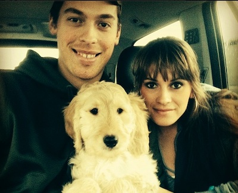

Bentley is the Porter Family's very first dog! Once I graduated from high school, my parents decided the best way for them to cure their empty nest syndrome was to get a dog. Bentley was born on a family farm in Bradford, Maine on Christmas Eve. Bentley is a F1B Goldendoodle designer dog, meaning he is 75 percent Poodle and 25 percent Golden Retriever. His favorite activities are going for rides with my dad in our RZR ATV, playing on the beach, and going for long walks. Overall, Bentley is a very good dog but at times, he has a strong personality and acts like a “Crazy Doodle.” However, having Bentley in our lives has not only helped to fill the loneliness of an empty nest, but he has brought so much laughter and love into our family as a whole. He truly has become a member of our family unit, and it would be hard to imagine our lives without him.

"We've wished and wished to have a puppy of our own since the early years of our childhood and that wish finally came true today!" - Jordan Porter - Adopted:3/22/14